7 — Semantics: studying meanings and functions of words
Lexicology and Lexicography
Outline
- Discussion of study questions — Q1–Q7 on Hilpert, Saavedra, and Rains (2023)
- Theoretical framework — Quick review: Principle of No Synonymy, Distributional Hypothesis
- COCA study overview — Data, method, and results
- Practice using Sketch Engine — Analyse clipping pairs using collocations and word sketches
Preparatory reading: Hilpert, Saavedra, and Rains (2023)
Study questions
Please read the paper and prepare answers to these questions for our class discussion:
- What is the Principle of No Synonymy, and what does it predict about clippings and their source words?
- How do the authors use the principle “You shall know a word by the company it keeps” (Firth 1957) to study meaning differences? What do they compare?
- What does the paper find about clippings in “involved” vs. “informational” contexts? Which linguistic features distinguish them?
- Some clippings (e.g., fridge/refrigerator) are nearly synonymous, while others (e.g., cardio/cardiovascular) show clear differences. What factors might explain this variation?
- How can collocation analysis reveal semantic differences not obvious from intuition? Use an example from the paper.
- Choose one pair from Table 1 (e.g., exam/examination). What differences might you expect, and what would you look for in a corpus analysis?
- The paper offers two explanations for clippings in “involved” contexts: familiarity vs. efficiency. What evidence supports each? Which do you find more convincing?
Q1: Principle of No Synonymy
What is the Principle of No Synonymy, and what does it predict about clippings and their source words?
- Definition: A difference in linguistic form always indicates a difference in meaning.
- Broad notion of “meaning”: semantic content, but also discourse-functional, interpersonal, and information-structural aspects.
- Prediction for clippings: clippings and source words should have distinct distributional characteristics that reflect functional differences.
Example: brother (kinship term) vs bro (address term for close friend within specific communities) — clearly distinct meanings despite shared etymology.
Q2: Distributional Hypothesis
How do the authors use the principle “You shall know a word by the company it keeps” to study meaning differences? What do they compare?
Two levels of comparison:
- Aggregate level: frequency of “involved” vs “informational” markers across all 50 pairs (Table 2)
- Individual level: token-based semantic vector spaces using second-order collocates
Q3: Involved vs Informational Contexts
What does the paper find about clippings in “involved” vs “informational” contexts? Which linguistic features distinguish them?
The paper tests 12 markers of involved vs informational text production.
Involved markers (more frequent with clippings):
- Private verbs (know, think, believe)
- Contractions (it’s, you’re)
- Present tense verbs
- 1st and 2nd person pronouns (I, you)
- Indefinite pronouns (something, anyone)
- Pronoun it
Informational markers (more frequent with source words):
- Complementiser that
- Common nouns
- Prepositions
:::
Q4: Variation in Synonymy
Some clippings (e.g., fridge/refrigerator) are nearly synonymous, while others (e.g., cardio/cardiovascular) show clear differences. What factors might explain this variation?
Clearly distinct pairs (Figure 3):
- cardio/cardiovascular: fitness vs medical contexts
- chemo/chemotherapy: patient experience vs technical medical
- indie/independent: underground culture vs general meaning
- dorm/dormitory: includes tourist lodging uses
Near-synonymous pairs (Figure 4):
- fridge/refrigerator: same semantic facets accessible to both
- porn/pornography: industry, psychological, legal aspects shared
Q5: Collocation Analysis
How can collocation analysis reveal semantic differences not obvious from intuition? Use an example from the paper.
Example: cardio vs cardiovascular
Intuition might suggest they mean the same thing. But collocates reveal:
cardiovascular:
- disease, diabetes, chronic
- renal, kidney, liver
- Medical/clinical contexts
cardio:
- workout, fat-blasting, calendar
- recipes, oranges, dishes
- Fitness/lifestyle contexts
:::
Q6: Corpus Analysis of exam/examination
Choose one pair from Table 1 (e.g., exam/examination). What differences might you expect, and what would you look for in a corpus analysis?
Expected differences:
- exam: academic/medical test contexts, informal register
- examination: formal register, plus “investigation/scrutiny” sense
What to look for in a corpus:
- Collocates: final exam, take an exam vs detailed examination, close examination, under examination
- Text types: spoken/informal (blog, fiction) vs written/formal (academic, news)
- Modifiers: different adjectives? (tough exam vs thorough examination)
- Syntactic patterns: examination of (investigation) vs exam in/on (subject)?
Q7: Familiarity vs Efficiency
The paper offers two explanations for clippings in “involved” contexts: familiarity vs efficiency. What evidence supports each? Which do you find more convincing?
Familiarity explanation:
- Clippings signal common ground, shared expertise, in-group membership
- Evidence: co-occurrence with “involved” markers; personal experience contexts
- Example: chemo in patient narratives vs chemotherapy in medical papers
Efficiency explanation:
- Shorter forms preferred when predictable; saves processing effort
- Counter-evidence: predictability effects are limited when forms differ in meaning
Theoretical framework
Does clipping involve a change in meaning?
One view: clippings and source words are alternatives that only differ in form, not meaning.
Examples:
- mic vs. microphone
- lab vs. laboratory
- ad vs. advertisement
But: do brother and bro have the same meaning?
The Principle of No Synonymy
- A difference in linguistic form always indicates a difference in meaning (Goldberg 1995).
- “Meaning” is broad: semantic, discourse-functional, interpersonal, etc.
- Prediction: clippings and source words should have distinct distributions, reflecting functional differences.
Think of 3 sentences the words brother and bro could appear in.
The Distributional hypothesis
- The meaning of words is reflected in their contextual elements in language use: “You shall know a word by the company it keeps” (Firth 1957).
- Words that appear in similar contexts share aspects of their meanings.
- Example: happy and joyful share collocates like very, feel, make, person.
Cognitive-linguistic models of the lexicon
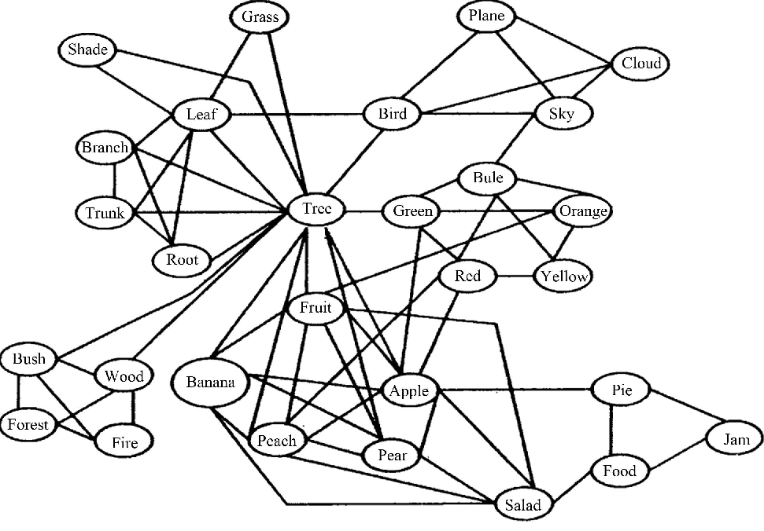
Word embeddings (Bandyopadhyay et al. 2022)
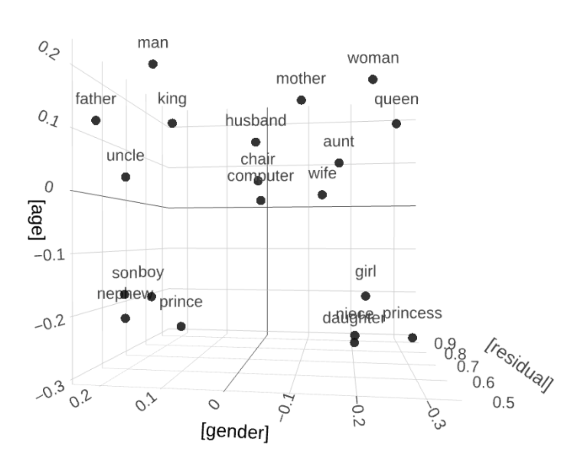
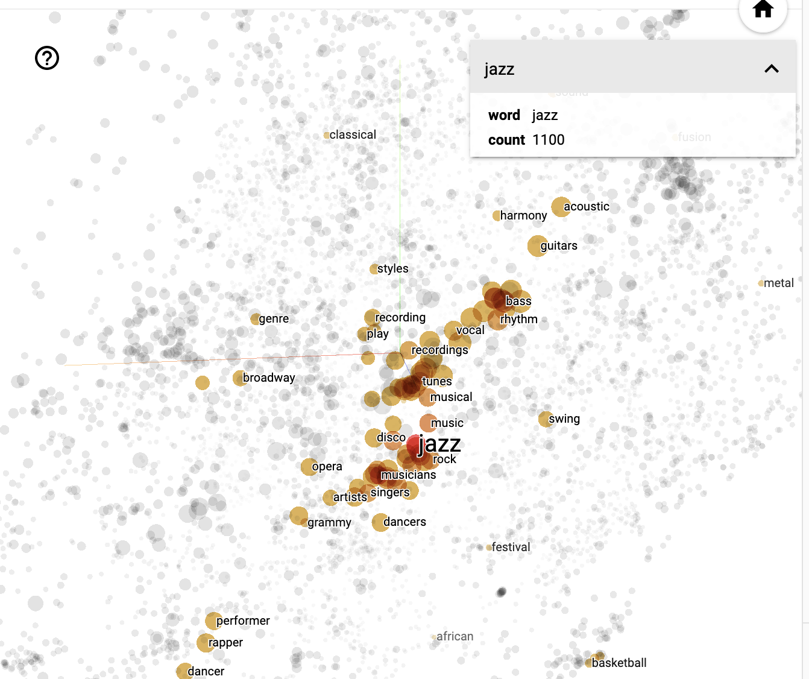
Exercise
- Explore synonyms and antonyms (Similar words)
- Enter a seed word (e.g.,
happy_ADJ). - Inspect the 5 nearest neighbours.
- Compare with an antonym (e.g.,
sad_ADJ).
- Enter a seed word (e.g.,
- Visualise semantic clusters (Visualization)
- Choose two related groups (e.g., animals vs furniture).
- Plot in vector space; describe visible groupings.
- Word analogies (Calculator)
- Try analogies, e.g.,
male_ADJ : doctor_NOUN = female_ADJ : ?. - Test several analogies; note successes and failures.
- Try analogies, e.g.,
- Investigate ambiguity
- Pick a polysemous word (e.g., bank).
- Analyse how neighbours reflect different senses.
Studying the meaning of clippings in the COCA
Hilpert, Saavedra, and Rains (2023)
Data
- Sample of 50 English clippings and their corresponding source words.
- Corpus data from COCA (Davies 2008) for each clipping and source word.
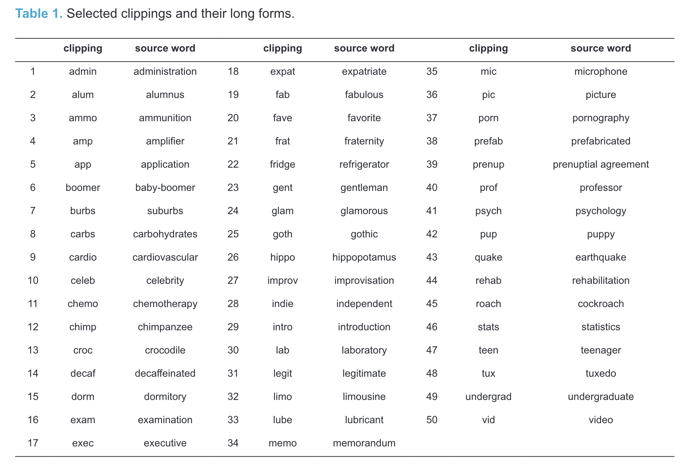
Method
Collocation analysis to investigate semantic profiles across contexts.

Results
Variation across text types
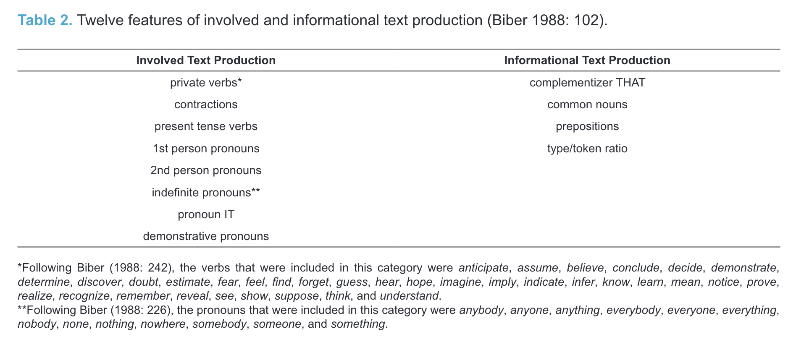
Semantic differences
Differences in collocations for cardiovascular vs cardio
Practice: studying meanings using Sketch Engine
Your Task
- Choose one of the word pairs from the sample above (Hilpert, Saavedra, and Rains 2023).
- Use the collocations and word sketches in the enTenTen21 corpus to analyse their meanings.
- Use the Guiding Questions below to structure your analysis.
- Take notes in this PowerPoint file.
- Share your findings with the class.
Collocation analysis
1. Run a query
e.g. [word="brother" & tag="N.*"]
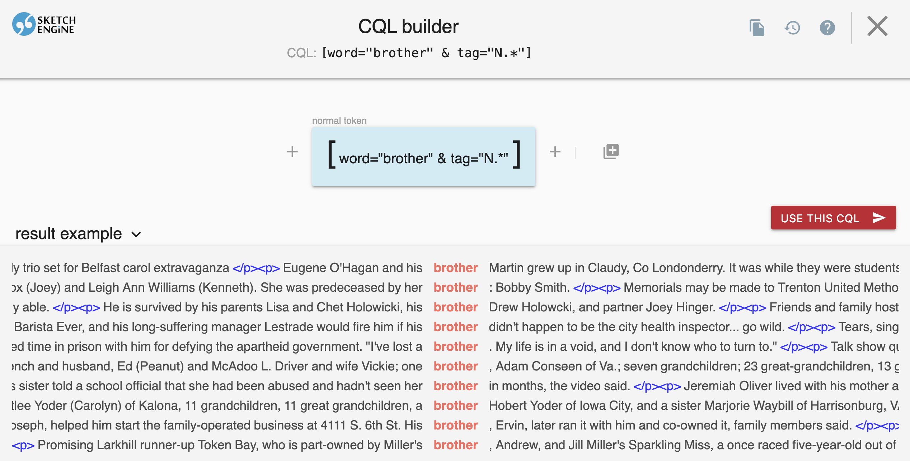
2. Click the collocation analysis icon

3. Configure window range and statistics
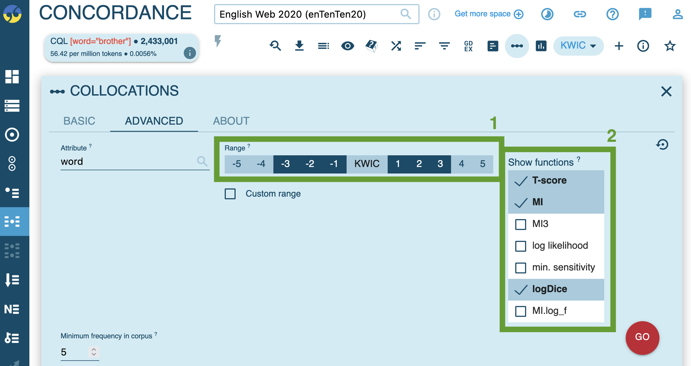
4. View the results and test collocation measures
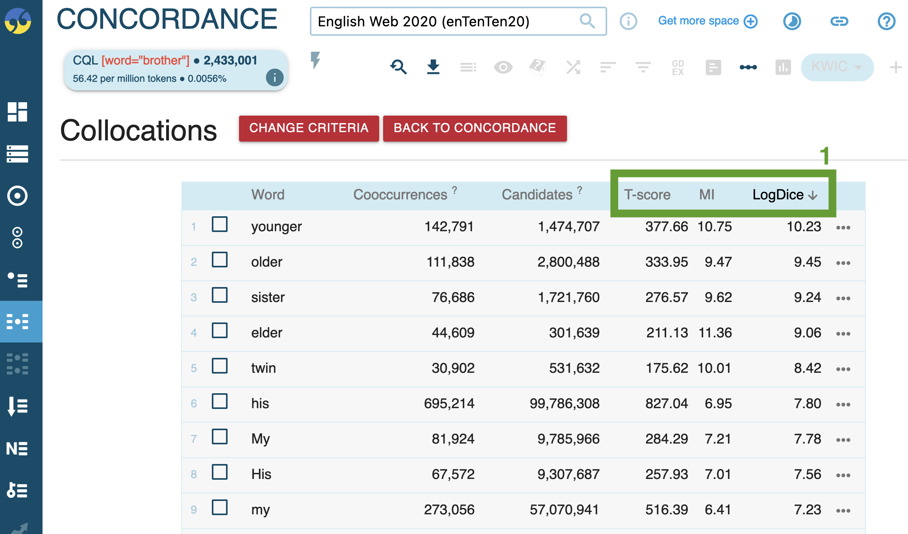
Word sketches: Single forms
1. Generate a word sketch for a clipped form (e.g. exam), specifying the word class.
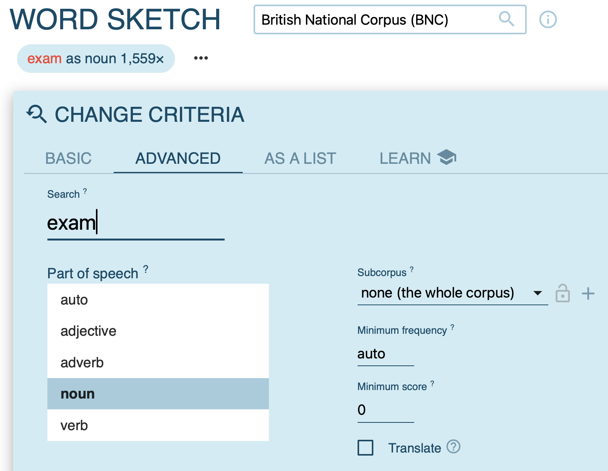
2. Examine syntactic contexts.
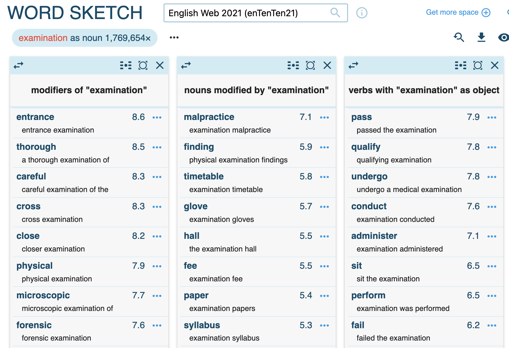
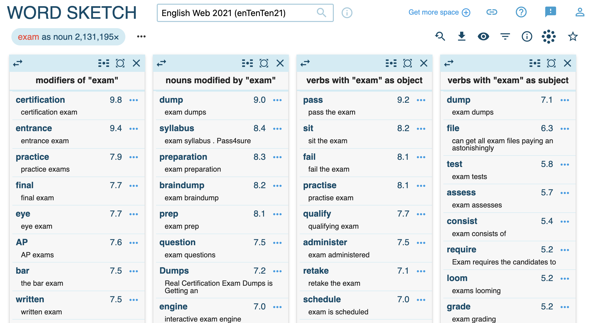
3. Visualise results.
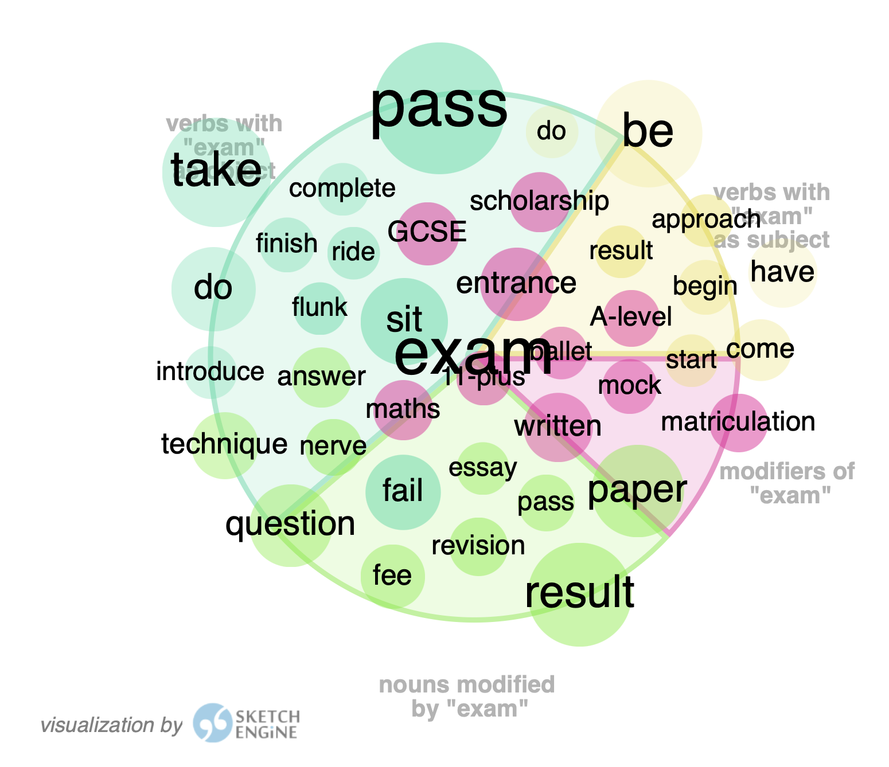
Word sketches: Comparison
1. Compare source words and clipped forms (e.g. examination vs exam).
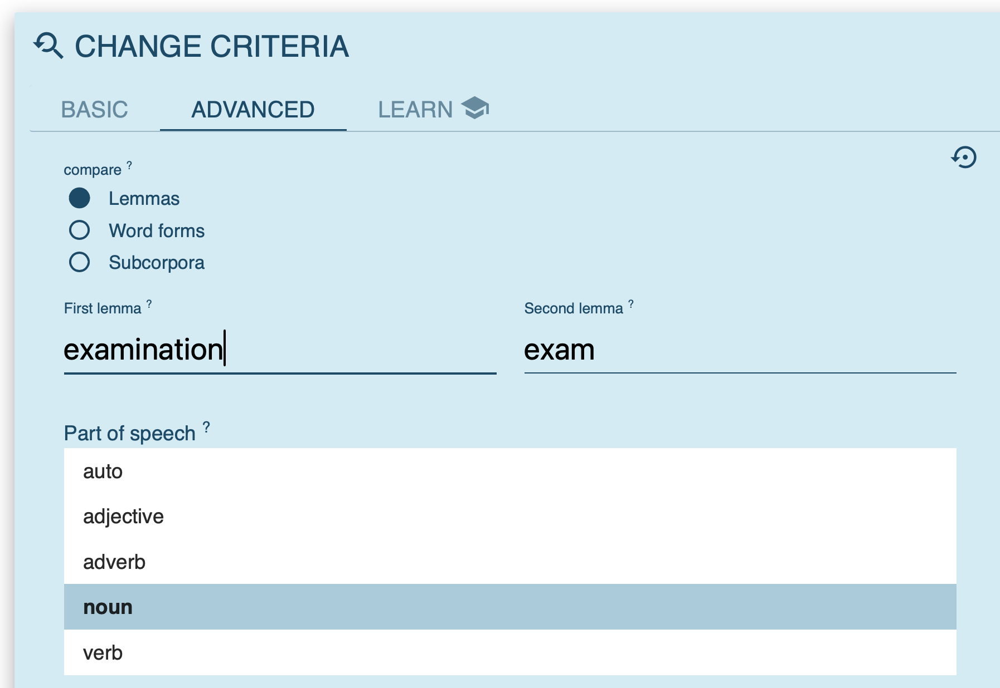
3. Inspect collocations in detail.
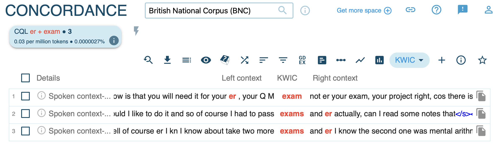
Guiding questions
- What is the general semantic signature of the source word?
- What is the general semantic signature of the clipped form?
- In what ways do they differ (stylistic, social, formality)?
- Do they occur in different syntagmatic contexts despite similar denotation?
- Does the clipped form have a wider or narrower scope of meaning?
Summary
- A difference in form (often) implies a difference in meaning. (Principle of No Synonymy)
- Meaning is use. The contexts a word appears in tell us about its function. (Distributional Hypothesis)
- Clippings are not just lazy shortcuts. They develop unique semantic, pragmatic, and social functions, often signalling familiarity and appearing in more “involved” contexts.